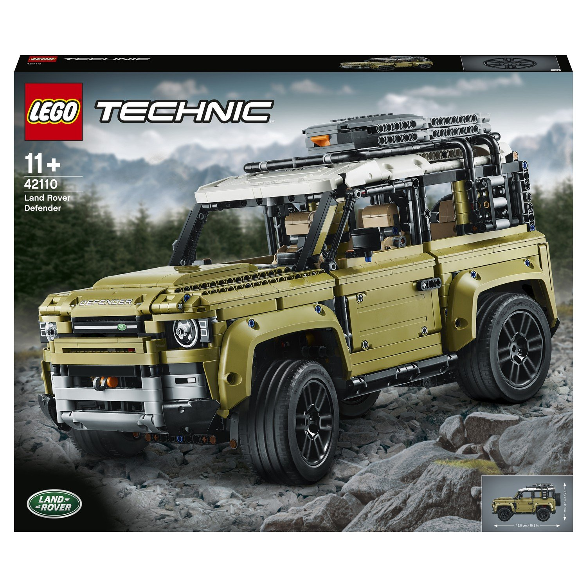
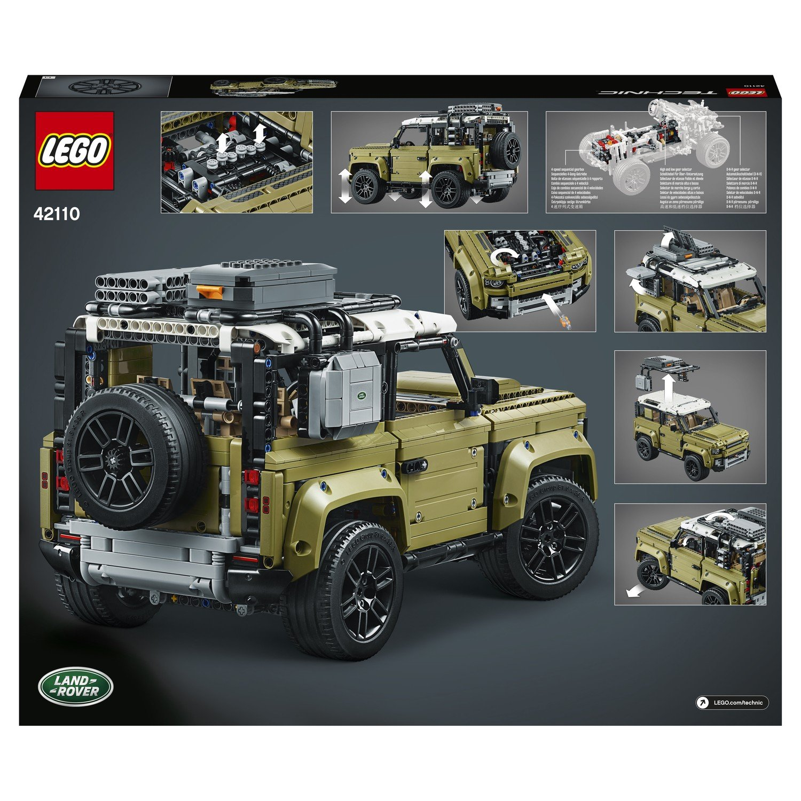
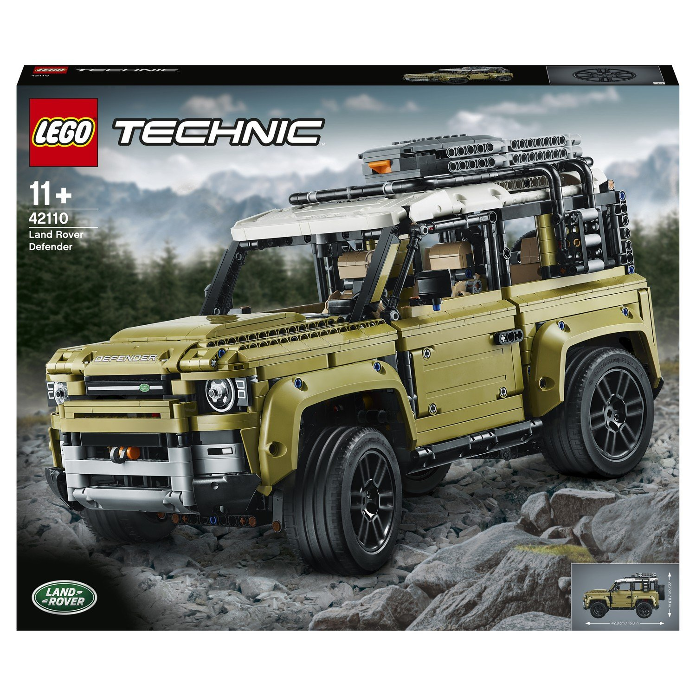
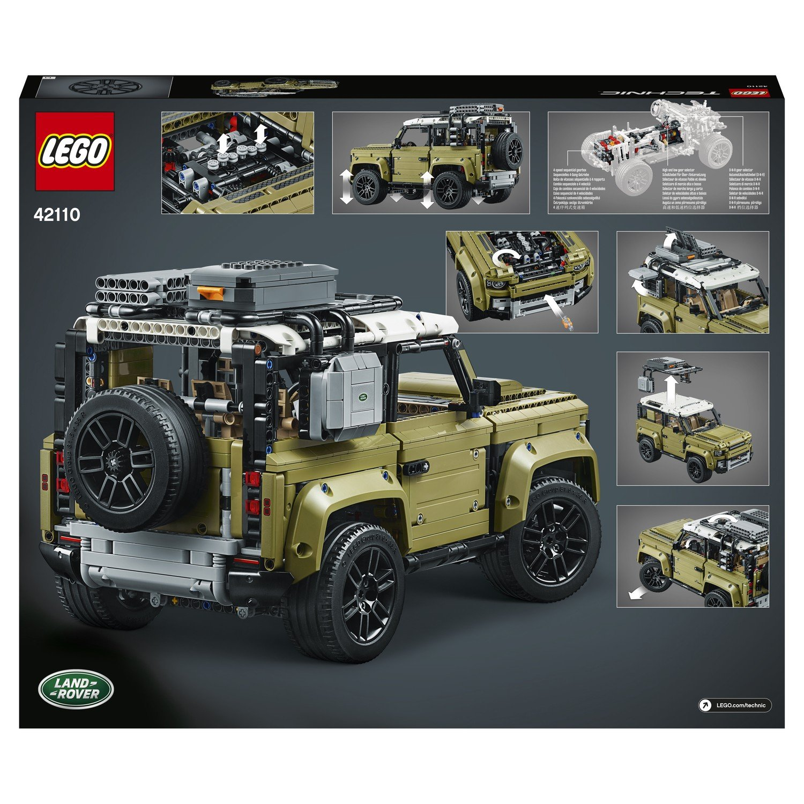

| Описание: | С помощью конструктора LEGO Technic 42110 Land Rover Defender вы познакомитесь с продуманным автомобильным дизайном. Представленная модель разработана вместе с Land Rover - четкие линии, изысканный дизайн, мощные шины. |
| Материал: | Пластик |
| Размер: | 48х9,1х58,2 см |
| Цена: | 20 389 ₽ |